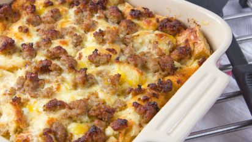

Breakfast Casserole

Description
The perfect hot meal to start the morning! Who doesn't love breakfast casserole?
Potatoes, cheese, and sausage with country gravy. Everything you want in breakfast!
Ingredients
- Jimmy Dean's original sausage
- shredded frozen hash browns
- one bag of shredded cheddar
- 2 tbsp flour
- 1.5 cups milk
Steps
- Cook sausage in pan, chopping into little bits.
- Once cooked, stir in flour and milk.
- Let thicken, stirring occasionally.
- Put hash browns in casserole dish (still frozen).
- Add a layer of cheese over potatoes.
- Pour sausage mixture on top evenly.
- Add the remainder of the cheese on top.
- Bake at 350 degrees for 50-55 minutes.